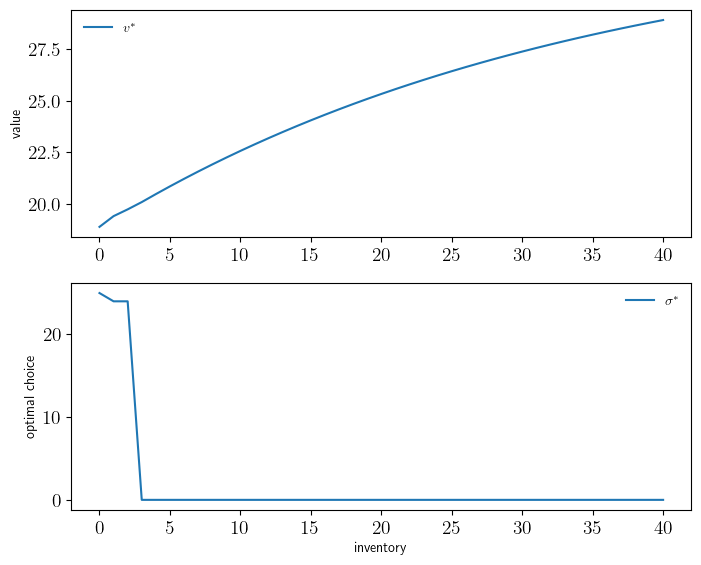
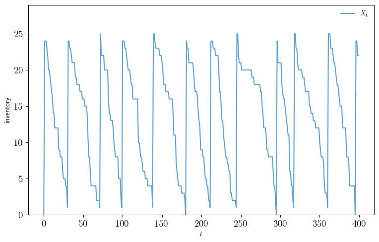
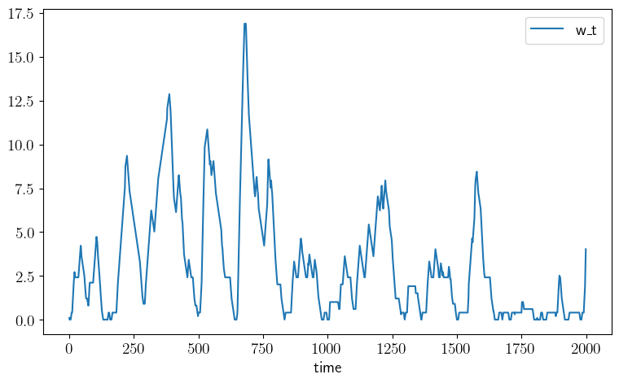
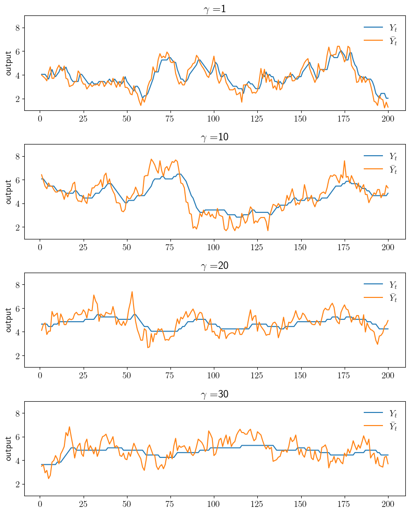
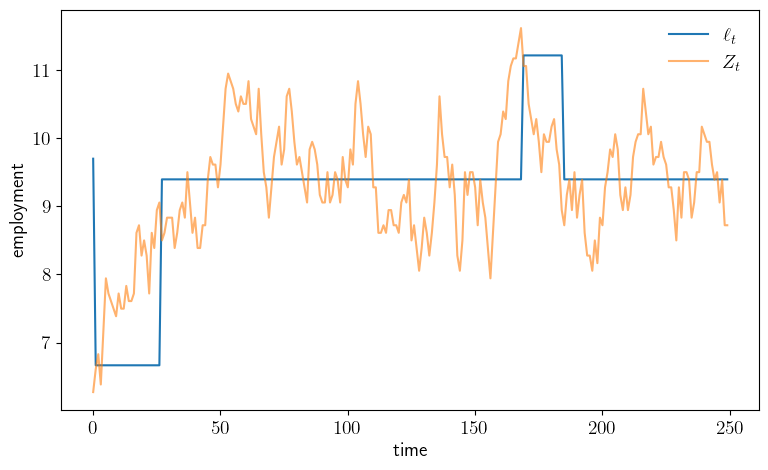

Chapter 5: Markov Decision Processes#
inventory_dp.py#
from quantecon import compute_fixed_point
import numpy as np
from collections import namedtuple
from numba import njit
# NamedTuple Model
Model = namedtuple("Model", ("β", "K", "c", "κ", "p"))
def create_inventory_model(β=0.98, # discount factor
K=40, # maximum inventory
c=0.2, κ=2, # cost parameters
p=0.6): # demand parameter
return Model(β=β, K=K, c=c, κ=κ, p=p)
@njit
def demand_pdf(d, p):
return (1 - p)**d * p
@njit
def B(x, a, v, model, d_max=101):
"""
The function B(x, a, v) = r(x, a) + β Σ_x′ v(x′) P(x, a, x′).
"""
β, K, c, κ, p = model
x1 = np.array([np.minimum(x, d)*demand_pdf(d, p) for d in np.arange(d_max)])
reward = np.sum(x1) - c * a - κ * (a > 0)
x2 = np.array([v[np.maximum(0, x - d) + a] * demand_pdf(d, p)
for d in np.arange(d_max)])
continuation_value = β * np.sum(x2)
return reward + continuation_value
@njit
def T(v, model):
"""The Bellman operator."""
β, K, c, κ, p = model
new_v = np.empty_like(v)
for x in range(0, K+1):
x1 = np.array([B(x, a, v, model) for a in np.arange(K-x+1)])
new_v[x] = np.max(x1)
return new_v
@njit
def get_greedy(v, model):
"""
Get a v-greedy policy. Returns a zero-based array.
"""
β, K, c, κ, p = model
σ_star = np.zeros(K+1, dtype=np.int32)
for x in range(0, K+1):
x1 = np.array([B(x, a, v, model) for a in np.arange(K-x+1)])
σ_star[x] = np.argmax(x1)
return σ_star
def solve_inventory_model(v_init, model):
"""Use successive_approx to get v_star and then compute greedy."""
β, K, c, κ, p = model
v_star = compute_fixed_point(lambda v: T(v, model), v_init,
error_tol=1e-5, max_iter=1000, print_skip=25)
σ_star = get_greedy(v_star, model)
return v_star, σ_star
# == Plots == #
import matplotlib.pyplot as plt
import matplotlib.pyplot as plt
plt.rcParams.update({"text.usetex": True, "font.size": 14})
# Create an instance of the model and solve it
model = create_inventory_model()
β, K, c, κ, p = model
v_init = np.zeros(K+1)
v_star, σ_star = solve_inventory_model(v_init, model)
def sim_inventories(ts_length=400, X_init=0):
"""Simulate given the optimal policy."""
global p, σ_star
X = np.zeros(ts_length, dtype=np.int32)
X[0] = X_init
# Subtracts 1 because numpy generates only positive integers
rand = np.random.default_rng().geometric(p=p, size=ts_length-1) - 1
for t in range(0, ts_length-1):
X[t+1] = np.maximum(X[t] - rand[t], 0) + σ_star[X[t] + 1]
return X
def plot_vstar_and_opt_policy(fontsize=10,
figname="./figures/inventory_dp_vs.pdf",
savefig=False):
fig, axes = plt.subplots(2, 1, figsize=(8, 6.5))
ax = axes[0]
ax.plot(np.arange(K+1), v_star, label=r"$v^*$")
ax.set_ylabel("value", fontsize=fontsize)
ax.legend(fontsize=fontsize, frameon=False)
ax = axes[1]
ax.plot(np.arange(K+1), σ_star, label=r"$\sigma^*$")
ax.set_xlabel("inventory", fontsize=fontsize)
ax.set_ylabel("optimal choice", fontsize=fontsize)
ax.legend(fontsize=fontsize, frameon=False)
if savefig:
fig.savefig(figname)
def plot_ts(fontsize=10,
figname="./figures/inventory_dp_ts.pdf",
savefig=False):
X = sim_inventories()
fig, ax = plt.subplots(figsize=(9, 5.5))
ax.plot(X, label="$X_t$", alpha=0.7)
ax.set_xlabel("$t$", fontsize=fontsize)
ax.set_ylabel("inventory", fontsize=fontsize)
ax.legend(fontsize=fontsize, frameon=False)
ax.set_ylim(0, np.max(X)+4)
if savefig:
fig.savefig(figname)
Iteration Distance Elapsed (seconds)
---------------------------------------------
25 4.104e-01 1.749e+00
50 2.102e-01 1.792e+00
75 9.558e-02 1.835e+00
100 5.715e-02 1.878e+00
125 3.436e-02 1.922e+00
150 2.070e-02 1.965e+00
175 1.249e-02 2.008e+00
200 7.532e-03 2.051e+00
225 4.545e-03 2.094e+00
250 2.743e-03 2.137e+00
275 1.655e-03 2.180e+00
300 9.987e-04 2.224e+00
325 6.027e-04 2.267e+00
350 3.637e-04 2.310e+00
375 2.195e-04 2.353e+00
400 1.324e-04 2.396e+00
425 7.993e-05 2.439e+00
450 4.823e-05 2.482e+00
475 2.911e-05 2.526e+00
500 1.757e-05 2.569e+00
525 1.060e-05 2.612e+00
528 9.977e-06 2.617e+00
Converged in 528 steps
plot_vstar_and_opt_policy()

plot_ts()

finite_opt_saving_0.py#
from quantecon.markov import tauchen
import numpy as np
from collections import namedtuple
from numba import njit, prange
# NamedTuple Model
Model = namedtuple("Model", ("β", "R", "γ", "w_grid", "y_grid", "Q"))
def create_savings_model(R=1.01, β=0.98, γ=2.5,
w_min=0.01, w_max=20.0, w_size=200,
ρ=0.9, ν=0.1, y_size=5):
w_grid = np.linspace(w_min, w_max, w_size)
mc = tauchen(y_size, ρ, ν)
y_grid, Q = np.exp(mc.state_values), mc.P
return Model(β=β, R=R, γ=γ, w_grid=w_grid, y_grid=y_grid, Q=Q)
@njit
def U(c, γ):
return c**(1-γ)/(1-γ)
@njit
def B(i, j, k, v, model):
"""
B(w, y, w′, v) = u(R*w + y - w′) + β Σ_y′ v(w′, y′) Q(y, y′).
"""
β, R, γ, w_grid, y_grid, Q = model
w, y, w_1 = w_grid[i], y_grid[j], w_grid[k]
c = w + y - (w_1 / R)
value = -np.inf
if c > 0:
value = U(c, γ) + β * np.dot(v[k, :], Q[j, :])
return value
@njit(parallel=True)
def T(v, model):
"""The Bellman operator."""
β, R, γ, w_grid, y_grid, Q = model
v_new = np.empty_like(v)
for i in prange(w_grid.shape[0]):
for j in prange(y_grid.shape[0]):
x_tmp = np.array([B(i, j, k, v, model) for k
in np.arange(w_grid.shape[0])])
v_new[i, j] = np.max(x_tmp)
return v_new
@njit(parallel=True)
def T_σ(v, σ, model):
"""The policy operator."""
β, R, γ, w_grid, y_grid, Q = model
v_new = np.empty_like(v)
for i in prange(w_grid.shape[0]):
for j in prange(y_grid.shape[0]):
v_new[i, j] = B(i, j, σ[i, j], v, model)
return v_new
finite_opt_saving_1.py#
import numpy as np
from finite_opt_saving_0 import U, B
from numba import njit, prange
@njit(parallel=True)
def get_greedy(v, model):
"""Compute a v-greedy policy."""
β, R, γ, w_grid, y_grid, Q = model
σ = np.empty((w_grid.shape[0], y_grid.shape[0]), dtype=np.int32)
for i in prange(w_grid.shape[0]):
for j in range(y_grid.shape[0]):
x_tmp = np.array([B(i, j, k, v, model) for k in
np.arange(w_grid.shape[0])])
σ[i, j] = np.argmax(x_tmp)
return σ
@njit
def single_to_multi(m, yn):
# Function to extract (i, j) from m = i + (j-1)*yn
return (m//yn, m%yn)
@njit(parallel=True)
def get_value(σ, model):
"""Get the value v_σ of policy σ."""
# Unpack and set up
β, R, γ, w_grid, y_grid, Q = model
wn, yn = len(w_grid), len(y_grid)
n = wn * yn
# Build P_σ and r_σ as multi-index arrays
P_σ = np.zeros((wn, yn, wn, yn))
r_σ = np.zeros((wn, yn))
for i in range(wn):
for j in range(yn):
w, y, w_1 = w_grid[i], y_grid[j], w_grid[σ[i, j]]
r_σ[i, j] = U(w + y - w_1/R, γ)
for i_1 in range(wn):
for j_1 in range(yn):
if i_1 == σ[i, j]:
P_σ[i, j, i_1, j_1] = Q[j, j_1]
# Solve for the value of σ
P_σ = P_σ.reshape(n, n)
r_σ = r_σ.reshape(n)
I = np.identity(n)
v_σ = np.linalg.solve((I - β * P_σ), r_σ)
# Return as multi-index array
v_σ = v_σ.reshape(wn, yn)
return v_σ
finite_opt_saving_2.py#
from quantecon import compute_fixed_point
import numpy as np
from numba import njit
import time
from finite_opt_saving_1 import get_greedy, get_value
from finite_opt_saving_0 import create_savings_model, T, T_σ
from quantecon import MarkovChain
def value_iteration(model, tol=1e-5):
"""Value function iteration routine."""
vz = np.zeros((len(model.w_grid), len(model.y_grid)))
v_star = compute_fixed_point(lambda v: T(v, model), vz,
error_tol=tol, max_iter=1000, print_skip=25)
return get_greedy(v_star, model)
@njit(cache=True, fastmath=True)
def policy_iteration(model):
"""Howard policy iteration routine."""
wn, yn = len(model.w_grid), len(model.y_grid)
σ = np.ones((wn, yn), dtype=np.int32)
i, error = 0, 1.0
while error > 0:
v_σ = get_value(σ, model)
σ_new = get_greedy(v_σ, model)
error = np.max(np.abs(σ_new - σ))
σ = σ_new
i = i + 1
print(f"Concluded loop {i} with error: {error}.")
return σ
@njit
def optimistic_policy_iteration(model, tolerance=1e-5, m=100):
"""Optimistic policy iteration routine."""
v = np.zeros((len(model.w_grid), len(model.y_grid)))
error = tolerance + 1
while error > tolerance:
last_v = v
σ = get_greedy(v, model)
for i in range(0, m):
v = T_σ(v, σ, model)
error = np.max(np.abs(v - last_v))
return get_greedy(v, model)
# Simulations and inequality measures
def simulate_wealth(m):
model = create_savings_model()
σ_star = optimistic_policy_iteration(model)
β, R, γ, w_grid, y_grid, Q = model
# Simulate labor income (indices rather than grid values)
mc = MarkovChain(Q)
y_idx_series = mc.simulate(ts_length=m)
# Compute corresponding wealth time series
w_idx_series = np.empty_like(y_idx_series)
w_idx_series[0] = 1 # initial condition
for t in range(m-1):
i, j = w_idx_series[t], y_idx_series[t]
w_idx_series[t+1] = σ_star[i, j]
w_series = w_grid[w_idx_series]
return w_series
def lorenz(v): # assumed sorted vector
S = np.cumsum(v) # cumulative sums: [v[1], v[1] + v[2], ... ]
F = np.arange(1, len(v) + 1) / len(v)
L = S / S[-1]
return (F, L) # returns named tuple
gini = lambda v: (2 * sum(i * y for (i, y) in enumerate(v))/sum(v) - (len(v) + 1))/len(v)
# Plots
import matplotlib.pyplot as plt
import matplotlib.pyplot as plt
plt.rcParams.update({"text.usetex": True, "font.size": 14})
def plot_timing(m_vals=np.arange(1, 601, 10),
savefig=False):
model = create_savings_model(y_size=5)
print("Running Howard policy iteration.")
t1 = time.time()
σ_pi = policy_iteration(model)
pi_time = time.time() - t1
print(f"PI completed in {pi_time} seconds.")
print("Running value function iteration.")
t1 = time.time()
σ_vfi = value_iteration(model)
vfi_time = time.time() - t1
print(f"VFI completed in {vfi_time} seconds.")
assert np.allclose(σ_vfi, σ_pi), "Warning: policies deviated."
opi_times = []
for m in m_vals:
print(f"Running optimistic policy iteration with m={m}.")
t1 = time.time()
σ_opi = optimistic_policy_iteration(model, m=m)
t2 = time.time()
assert np.allclose(σ_opi, σ_pi), "Warning: policies deviated."
print(f"OPI with m={m} completed in {t2-t1} seconds.")
opi_times.append(t2-t1)
fig, ax = plt.subplots(figsize=(9, 5.2))
ax.plot(m_vals, [vfi_time]*len(m_vals),
linewidth=2, label="value function iteration")
ax.plot(m_vals, [pi_time]*len(m_vals),
linewidth=2, label="Howard policy iteration")
ax.plot(m_vals, opi_times, linewidth=2,
label="optimistic policy iteration")
ax.legend(frameon=False)
ax.set_xlabel(r"$m$")
ax.set_ylabel("time")
if savefig:
fig.savefig("./figures/finite_opt_saving_2_1.png")
return (pi_time, vfi_time, opi_times)
def plot_policy(method="pi", savefig=False):
model = create_savings_model()
β, R, γ, w_grid, y_grid, Q = model
if method == "vfi":
σ_star = value_iteration(model)
elif method == "pi":
σ_star = policy_iteration(model)
else:
method = "OPT"
σ_star = optimistic_policy_iteration(model)
fig, ax = plt.subplots(figsize=(9, 5.2))
ax.plot(w_grid, w_grid, "k--", label=r"$45$")
ax.plot(w_grid, w_grid[σ_star[:, 0]], label=r"$\sigma^*(\cdot, y_1)$")
ax.plot(w_grid, w_grid[σ_star[:, -1]], label=r"$\sigma^*(\cdot, y_N)$")
ax.legend()
plt.title(f"Method: {method}")
if savefig:
fig.savefig(f"./figures/finite_opt_saving_2_2_{method}.png")
def plot_time_series(m=2_000, savefig=False):
w_series = simulate_wealth(m)
fig, ax = plt.subplots(figsize=(9, 5.2))
ax.plot(w_series, label="w_t")
ax.set_xlabel("time")
ax.legend()
if savefig:
fig.savefig("./figures/finite_opt_saving_ts.pdf")
def plot_histogram(m=1_000_000, savefig=False):
w_series = simulate_wealth(m)
w_series.sort()
g = round(gini(w_series), ndigits=2)
fig, ax = plt.subplots(figsize=(9, 5.2))
ax.hist(w_series, bins=40, density=True)
ax.set_xlabel("wealth")
ax.text(15, 0.4, f"Gini = {g}")
if savefig:
fig.savefig("./figures/finite_opt_saving_hist.pdf")
def plot_lorenz(m=1_000_000, savefig=False):
w_series = simulate_wealth(m)
w_series.sort()
(F, L) = lorenz(w_series)
fig, ax = plt.subplots(figsize=(9, 5.2))
ax.plot(F, F, label="Lorenz curve, equality")
ax.plot(F, L, label="Lorenz curve, wealth distribution")
ax.legend()
if savefig:
fig.savefig("./figures/finite_opt_saving_lorenz.pdf")
plot_timing()
Running Howard policy iteration.
Concluded loop 1 with error: 100.
Concluded loop 2 with error: 80.
Concluded loop 3 with error: 34.
Concluded loop 4 with error: 20.
Concluded loop 5 with error: 11.
Concluded loop 6 with error: 5.
Concluded loop 7 with error: 5.
Concluded loop 8 with error: 3.
Concluded loop 9 with error: 1.
Concluded loop 10 with error: 1.
Concluded loop 11 with error: 1.
Concluded loop 12 with error: 1.
Concluded loop 13 with error: 1.
Concluded loop 14 with error: 1.
Concluded loop 15 with error: 1.
Concluded loop 16 with error: 1.
Concluded loop 17 with error: 1.
Concluded loop 18 with error: 1.
Concluded loop 19 with error: 1.
Concluded loop 20 with error: 1.
Concluded loop 21 with error: 1.
Concluded loop 22 with error: 1.
Concluded loop 23 with error: 0.
PI completed in 11.783779382705688 seconds.
Running value function iteration.
Iteration Distance Elapsed (seconds)
---------------------------------------------
25 5.365e-01 2.042e+00
50 2.757e-01 2.199e+00
75 1.596e-01 2.359e+00
100 9.494e-02 2.517e+00
125 5.692e-02 2.675e+00
150 3.424e-02 2.833e+00
175 2.063e-02 2.995e+00
200 1.244e-02 3.153e+00
225 7.502e-03 3.313e+00
250 4.526e-03 3.471e+00
275 2.731e-03 3.630e+00
300 1.648e-03 3.785e+00
325 9.944e-04 3.945e+00
350 6.001e-04 4.101e+00
375 3.621e-04 4.257e+00
400 2.185e-04 4.412e+00
425 1.319e-04 4.567e+00
450 7.958e-05 4.722e+00
475 4.802e-05 4.878e+00
500 2.898e-05 5.039e+00
525 1.749e-05 5.194e+00
550 1.055e-05 5.350e+00
553 9.933e-06 5.368e+00
Converged in 553 steps
VFI completed in 5.3746562004089355 seconds.
Running optimistic policy iteration with m=1.
OPI with m=1 completed in 5.359813690185547 seconds.
Running optimistic policy iteration with m=11.
OPI with m=11 completed in 0.41520047187805176 seconds.
Running optimistic policy iteration with m=21.
OPI with m=21 completed in 0.24427342414855957 seconds.
Running optimistic policy iteration with m=31.
OPI with m=31 completed in 0.1992197036743164 seconds.
Running optimistic policy iteration with m=41.
OPI with m=41 completed in 0.16652488708496094 seconds.
Running optimistic policy iteration with m=51.
OPI with m=51 completed in 0.22116327285766602 seconds.
Running optimistic policy iteration with m=61.
OPI with m=61 completed in 0.18300890922546387 seconds.
Running optimistic policy iteration with m=71.
OPI with m=71 completed in 0.22893095016479492 seconds.
Running optimistic policy iteration with m=81.
OPI with m=81 completed in 0.23781085014343262 seconds.
Running optimistic policy iteration with m=91.
OPI with m=91 completed in 0.2433185577392578 seconds.
Running optimistic policy iteration with m=101.
OPI with m=101 completed in 0.26157402992248535 seconds.
Running optimistic policy iteration with m=111.
OPI with m=111 completed in 0.26340150833129883 seconds.
Running optimistic policy iteration with m=121.
OPI with m=121 completed in 0.27672290802001953 seconds.
Running optimistic policy iteration with m=131.
OPI with m=131 completed in 0.2815067768096924 seconds.
Running optimistic policy iteration with m=141.
OPI with m=141 completed in 0.30115437507629395 seconds.
Running optimistic policy iteration with m=151.
OPI with m=151 completed in 0.3026919364929199 seconds.
Running optimistic policy iteration with m=161.
OPI with m=161 completed in 0.31188297271728516 seconds.
Running optimistic policy iteration with m=171.
OPI with m=171 completed in 0.331362247467041 seconds.
Running optimistic policy iteration with m=181.
OPI with m=181 completed in 0.3329493999481201 seconds.
Running optimistic policy iteration with m=191.
OPI with m=191 completed in 0.33740663528442383 seconds.
Running optimistic policy iteration with m=201.
OPI with m=201 completed in 0.3543410301208496 seconds.
Running optimistic policy iteration with m=211.
OPI with m=211 completed in 0.3560512065887451 seconds.
Running optimistic policy iteration with m=221.
OPI with m=221 completed in 0.36876392364501953 seconds.
Running optimistic policy iteration with m=231.
OPI with m=231 completed in 0.3847486972808838 seconds.
Running optimistic policy iteration with m=241.
OPI with m=241 completed in 0.38449740409851074 seconds.
Running optimistic policy iteration with m=251.
OPI with m=251 completed in 0.40579938888549805 seconds.
Running optimistic policy iteration with m=261.
OPI with m=261 completed in 0.41043853759765625 seconds.
Running optimistic policy iteration with m=271.
OPI with m=271 completed in 0.4149594306945801 seconds.
Running optimistic policy iteration with m=281.
OPI with m=281 completed in 0.43564414978027344 seconds.
Running optimistic policy iteration with m=291.
OPI with m=291 completed in 0.4336831569671631 seconds.
Running optimistic policy iteration with m=301.
OPI with m=301 completed in 0.4570581912994385 seconds.
Running optimistic policy iteration with m=311.
OPI with m=311 completed in 0.4494333267211914 seconds.
Running optimistic policy iteration with m=321.
OPI with m=321 completed in 0.4695262908935547 seconds.
Running optimistic policy iteration with m=331.
OPI with m=331 completed in 0.47855043411254883 seconds.
Running optimistic policy iteration with m=341.
OPI with m=341 completed in 0.4918034076690674 seconds.
Running optimistic policy iteration with m=351.
OPI with m=351 completed in 0.5391073226928711 seconds.
Running optimistic policy iteration with m=361.
OPI with m=361 completed in 0.5123419761657715 seconds.
Running optimistic policy iteration with m=371.
OPI with m=371 completed in 0.5102534294128418 seconds.
Running optimistic policy iteration with m=381.
OPI with m=381 completed in 0.5268559455871582 seconds.
Running optimistic policy iteration with m=391.
OPI with m=391 completed in 0.5282645225524902 seconds.
Running optimistic policy iteration with m=401.
OPI with m=401 completed in 0.5483303070068359 seconds.
Running optimistic policy iteration with m=411.
OPI with m=411 completed in 0.5453755855560303 seconds.
Running optimistic policy iteration with m=421.
OPI with m=421 completed in 0.5637485980987549 seconds.
Running optimistic policy iteration with m=431.
OPI with m=431 completed in 0.5667204856872559 seconds.
Running optimistic policy iteration with m=441.
OPI with m=441 completed in 0.5896849632263184 seconds.
Running optimistic policy iteration with m=451.
OPI with m=451 completed in 0.5903830528259277 seconds.
Running optimistic policy iteration with m=461.
OPI with m=461 completed in 0.5966084003448486 seconds.
Running optimistic policy iteration with m=471.
OPI with m=471 completed in 0.6128406524658203 seconds.
Running optimistic policy iteration with m=481.
OPI with m=481 completed in 0.6119239330291748 seconds.
Running optimistic policy iteration with m=491.
OPI with m=491 completed in 0.6285266876220703 seconds.
Running optimistic policy iteration with m=501.
OPI with m=501 completed in 0.6370015144348145 seconds.
Running optimistic policy iteration with m=511.
OPI with m=511 completed in 0.6429986953735352 seconds.
Running optimistic policy iteration with m=521.
OPI with m=521 completed in 0.6576030254364014 seconds.
Running optimistic policy iteration with m=531.
OPI with m=531 completed in 0.6665968894958496 seconds.
Running optimistic policy iteration with m=541.
OPI with m=541 completed in 0.6743278503417969 seconds.
Running optimistic policy iteration with m=551.
OPI with m=551 completed in 0.6846401691436768 seconds.
Running optimistic policy iteration with m=561.
OPI with m=561 completed in 0.694927453994751 seconds.
Running optimistic policy iteration with m=571.
OPI with m=571 completed in 0.6950962543487549 seconds.
Running optimistic policy iteration with m=581.
OPI with m=581 completed in 0.7132656574249268 seconds.
Running optimistic policy iteration with m=591.
OPI with m=591 completed in 0.7453327178955078 seconds.
(11.783779382705688,
5.3746562004089355,
[5.359813690185547,
0.41520047187805176,
0.24427342414855957,
0.1992197036743164,
0.16652488708496094,
0.22116327285766602,
0.18300890922546387,
0.22893095016479492,
0.23781085014343262,
0.2433185577392578,
0.26157402992248535,
0.26340150833129883,
0.27672290802001953,
0.2815067768096924,
0.30115437507629395,
0.3026919364929199,
0.31188297271728516,
0.331362247467041,
0.3329493999481201,
0.33740663528442383,
0.3543410301208496,
0.3560512065887451,
0.36876392364501953,
0.3847486972808838,
0.38449740409851074,
0.40579938888549805,
0.41043853759765625,
0.4149594306945801,
0.43564414978027344,
0.4336831569671631,
0.4570581912994385,
0.4494333267211914,
0.4695262908935547,
0.47855043411254883,
0.4918034076690674,
0.5391073226928711,
0.5123419761657715,
0.5102534294128418,
0.5268559455871582,
0.5282645225524902,
0.5483303070068359,
0.5453755855560303,
0.5637485980987549,
0.5667204856872559,
0.5896849632263184,
0.5903830528259277,
0.5966084003448486,
0.6128406524658203,
0.6119239330291748,
0.6285266876220703,
0.6370015144348145,
0.6429986953735352,
0.6576030254364014,
0.6665968894958496,
0.6743278503417969,
0.6846401691436768,
0.694927453994751,
0.6950962543487549,
0.7132656574249268,
0.7453327178955078])
plot_policy()
Concluded loop 1 with error: 100.
Concluded loop 2 with error: 80.
Concluded loop 3 with error: 34.
Concluded loop 4 with error: 20.
Concluded loop 5 with error: 11.
Concluded loop 6 with error: 5.
Concluded loop 7 with error: 5.
Concluded loop 8 with error: 3.
Concluded loop 9 with error: 1.
Concluded loop 10 with error: 1.
Concluded loop 11 with error: 1.
Concluded loop 12 with error: 1.
Concluded loop 13 with error: 1.
Concluded loop 14 with error: 1.
Concluded loop 15 with error: 1.
Concluded loop 16 with error: 1.
Concluded loop 17 with error: 1.
Concluded loop 18 with error: 1.
Concluded loop 19 with error: 1.
Concluded loop 20 with error: 1.
Concluded loop 21 with error: 1.
Concluded loop 22 with error: 1.
Concluded loop 23 with error: 0.
plot_time_series()

plot_histogram()
plot_lorenz()
finite_lq.py#
from quantecon import compute_fixed_point
from quantecon.markov import tauchen, MarkovChain
import numpy as np
from collections import namedtuple
from numba import njit, prange
import time
# NamedTuple Model
Model = namedtuple("Model", ("β", "a_0", "a_1", "γ", "c",
"y_grid", "z_grid", "Q"))
def create_investment_model(
r=0.04, # Interest rate
a_0=10.0, a_1=1.0, # Demand parameters
γ=25.0, c=1.0, # Adjustment and unit cost
y_min=0.0, y_max=20.0, y_size=100, # Grid for output
ρ=0.9, ν=1.0, # AR(1) parameters
z_size=25): # Grid size for shock
β = 1/(1+r)
y_grid = np.linspace(y_min, y_max, y_size)
mc = tauchen(y_size, ρ, ν)
z_grid, Q = mc.state_values, mc.P
return Model(β=β, a_0=a_0, a_1=a_1, γ=γ, c=c,
y_grid=y_grid, z_grid=z_grid, Q=Q)
@njit
def B(i, j, k, v, model):
"""
The aggregator B is given by
B(y, z, y′) = r(y, z, y′) + β Σ_z′ v(y′, z′) Q(z, z′)."
where
r(y, z, y′) := (a_0 - a_1 * y + z - c) y - γ * (y′ - y)^2
"""
β, a_0, a_1, γ, c, y_grid, z_grid, Q = model
y, z, y_1 = y_grid[i], z_grid[j], y_grid[k]
r = (a_0 - a_1 * y + z - c) * y - γ * (y_1 - y)**2
return r + β * np.dot(v[k, :], Q[j, :])
@njit(parallel=True)
def T_σ(v, σ, model):
"""The policy operator."""
v_new = np.empty_like(v)
for i in prange(len(model.y_grid)):
for j in prange(len(model.z_grid)):
v_new[i, j] = B(i, j, σ[i, j], v, model)
return v_new
@njit(parallel=True)
def T(v, model):
"""The Bellman operator."""
v_new = np.empty_like(v)
for i in prange(len(model.y_grid)):
for j in prange(len(model.z_grid)):
tmp = np.array([B(i, j, k, v, model) for k
in np.arange(len(model.y_grid))])
v_new[i, j] = np.max(tmp)
return v_new
@njit(parallel=True)
def get_greedy(v, model):
"""Compute a v-greedy policy."""
n, m = len(model.y_grid), len(model.z_grid)
σ = np.empty((n, m), dtype=np.int32)
for i in prange(n):
for j in prange(m):
tmp = np.array([B(i, j, k, v, model) for k
in np.arange(n)])
σ[i, j] = np.argmax(tmp)
return σ
def value_iteration(model, tol=1e-5):
"""Value function iteration routine."""
vz = np.zeros((len(model.y_grid), len(model.z_grid)))
v_star = compute_fixed_point(lambda v: T(v, model), vz,
error_tol=tol, max_iter=1000, print_skip=25)
return get_greedy(v_star, model)
@njit
def single_to_multi(m, zn):
# Function to extract (i, j) from m = i + (j-1)*zn
return (m//zn, m%zn)
@njit(parallel=True)
def get_value(σ, model):
"""Get the value v_σ of policy σ."""
# Unpack and set up
β, a_0, a_1, γ, c, y_grid, z_grid, Q = model
yn, zn = len(y_grid), len(z_grid)
n = yn * zn
# Allocate and create single index versions of P_σ and r_σ
P_σ = np.zeros((n, n))
r_σ = np.zeros(n)
for m in prange(n):
i, j = single_to_multi(m, zn)
y, z, y_1 = y_grid[i], z_grid[j], y_grid[σ[i, j]]
r_σ[m] = (a_0 - a_1 * y + z - c) * y - γ * (y_1 - y)**2
for m_1 in prange(n):
i_1, j_1 = single_to_multi(m_1, zn)
if i_1 == σ[i, j]:
P_σ[m, m_1] = Q[j, j_1]
I = np.identity(n)
# Solve for the value of σ
v_σ = np.linalg.solve((I - β * P_σ), r_σ)
# Return as multi-index array
v_σ = v_σ.reshape(yn, zn)
return v_σ
@njit
def policy_iteration(model):
"""Howard policy iteration routine."""
yn, zn = len(model.y_grid), len(model.z_grid)
σ = np.ones((yn, zn), dtype=np.int32)
i, error = 0, 1.0
while error > 0:
v_σ = get_value(σ, model)
σ_new = get_greedy(v_σ, model)
error = np.max(np.abs(σ_new - σ))
σ = σ_new
i = i + 1
print(f"Concluded loop {i} with error: {error}.")
return σ
@njit
def optimistic_policy_iteration(model, tol=1e-5, m=100):
"""Optimistic policy iteration routine."""
v = np.zeros((len(model.y_grid), len(model.z_grid)))
error = tol + 1
while error > tol:
last_v = v
σ = get_greedy(v, model)
for i in range(m):
v = T_σ(v, σ, model)
error = np.max(np.abs(v - last_v))
return get_greedy(v, model)
# Plots
import matplotlib.pyplot as plt
import matplotlib.pyplot as plt
plt.rcParams.update({"text.usetex": True, "font.size": 14})
def plot_policy(savefig=False, figname="./figures/finite_lq_0.pdf"):
model = create_investment_model()
β, a_0, a_1, γ, c, y_grid, z_grid, Q = model
σ_star = optimistic_policy_iteration(model)
fig, ax = plt.subplots(figsize=(9, 5.2))
ax.plot(y_grid, y_grid, "k--", label=r"$45$")
ax.plot(y_grid, y_grid[σ_star[:, 0]], label=r"$\sigma^*(\cdot, z_1)$")
ax.plot(y_grid, y_grid[σ_star[:, -1]], label="$\sigma^*(\cdot, z_N)$")
ax.legend()
if savefig:
fig.savefig(figname)
def plot_sim(savefig=False, figname="./figures/finite_lq_1.pdf"):
ts_length = 200
fig, axes = plt.subplots(4, 1, figsize=(9, 11.2))
for (ax, γ) in zip(axes, (1, 10, 20, 30)):
model = create_investment_model(γ=γ)
β, a_0, a_1, γ, c, y_grid, z_grid, Q = model
σ_star = optimistic_policy_iteration(model)
mc = MarkovChain(Q, z_grid)
z_sim_idx = mc.simulate_indices(ts_length)
z_sim = z_grid[z_sim_idx]
y_sim_idx = np.empty(ts_length, dtype=np.int32)
y_1 = (a_0 - c + z_sim[1]) / (2 * a_1)
y_sim_idx[0] = np.searchsorted(y_grid, y_1)
for t in range(ts_length-1):
y_sim_idx[t+1] = σ_star[y_sim_idx[t], z_sim_idx[t]]
y_sim = y_grid[y_sim_idx]
y_bar_sim = (a_0 - c + z_sim) / (2 * a_1)
ax.plot(np.arange(1, ts_length+1), y_sim, label=r"$Y_t$")
ax.plot(np.arange(1, ts_length+1), y_bar_sim, label=r"$\bar Y_t$")
ax.legend(frameon=False, loc="upper right")
ax.set_ylabel("output")
ax.set_ylim(1, 9)
ax.set_title(r"$\gamma = $" + f"{γ}")
fig.tight_layout()
if savefig:
fig.savefig(figname)
def plot_timing(m_vals=np.arange(1, 601, 10),
savefig=False,
figname="./figures/finite_lq_time.pdf"
):
# NOTE: Uncomment the following lines in this function to
# include Policy iteration plot
model = create_investment_model()
# print("Running Howard policy iteration.")
# t1 = time.time()
# σ_pi = policy_iteration(model)
# pi_time = time.time() - t1
# print(f"PI completed in {pi_time} seconds.")
print("Running value function iteration.")
t1 = time.time()
σ_vfi = value_iteration(model)
vfi_time = time.time() - t1
print(f"VFI completed in {vfi_time} seconds.")
opi_times = []
for m in m_vals:
print(f"Running optimistic policy iteration with m={m}.")
t1 = time.time()
σ_opi = optimistic_policy_iteration(model, m=m, tol=1e-5)
t2 = time.time()
print(f"OPI with m={m} completed in {t2-t1} seconds.")
opi_times.append(t2-t1)
fig, ax = plt.subplots(figsize=(9, 5.2))
ax.plot(m_vals, [vfi_time]*len(m_vals),
linewidth=2, label="value function iteration")
# ax.plot(m_vals, [pi_time]*len(m_vals),
# linewidth=2, label="Howard policy iteration")
ax.plot(m_vals, opi_times, linewidth=2, label="optimistic policy iteration")
ax.legend(frameon=False)
ax.set_xlabel(r"$m$")
ax.set_ylabel("time")
if savefig:
fig.savefig(figname)
return (vfi_time, opi_times)
plot_policy()
plot_sim()

plot_timing()
Running value function iteration.
Iteration Distance Elapsed (seconds)
---------------------------------------------
25 8.945e+00 1.796e+00
50 3.040e+00 2.613e+00
75 1.132e+00 3.432e+00
100 4.246e-01 4.250e+00
125 1.593e-01 5.070e+00
150 5.974e-02 5.884e+00
175 2.241e-02 6.703e+00
200 8.406e-03 7.511e+00
225 3.153e-03 8.328e+00
250 1.183e-03 9.152e+00
275 4.437e-04 9.971e+00
300 1.664e-04 1.079e+01
325 6.244e-05 1.161e+01
350 2.342e-05 1.242e+01
372 9.883e-06 1.315e+01
Converged in 372 steps
VFI completed in 13.181269645690918 seconds.
Running optimistic policy iteration with m=1.
OPI with m=1 completed in 12.735380172729492 seconds.
Running optimistic policy iteration with m=11.
OPI with m=11 completed in 1.4716589450836182 seconds.
Running optimistic policy iteration with m=21.
OPI with m=21 completed in 0.8927834033966064 seconds.
Running optimistic policy iteration with m=31.
OPI with m=31 completed in 0.7081937789916992 seconds.
Running optimistic policy iteration with m=41.
OPI with m=41 completed in 0.6160323619842529 seconds.
Running optimistic policy iteration with m=51.
OPI with m=51 completed in 0.5661828517913818 seconds.
Running optimistic policy iteration with m=61.
OPI with m=61 completed in 0.5711178779602051 seconds.
Running optimistic policy iteration with m=71.
OPI with m=71 completed in 0.5329883098602295 seconds.
Running optimistic policy iteration with m=81.
OPI with m=81 completed in 0.5508720874786377 seconds.
Running optimistic policy iteration with m=91.
OPI with m=91 completed in 0.5848641395568848 seconds.
Running optimistic policy iteration with m=101.
OPI with m=101 completed in 0.6760997772216797 seconds.
Running optimistic policy iteration with m=111.
OPI with m=111 completed in 0.6301794052124023 seconds.
Running optimistic policy iteration with m=121.
OPI with m=121 completed in 0.6627802848815918 seconds.
Running optimistic policy iteration with m=131.
OPI with m=131 completed in 0.6939132213592529 seconds.
Running optimistic policy iteration with m=141.
OPI with m=141 completed in 0.7147676944732666 seconds.
Running optimistic policy iteration with m=151.
OPI with m=151 completed in 0.828728437423706 seconds.
Running optimistic policy iteration with m=161.
OPI with m=161 completed in 0.8580403327941895 seconds.
Running optimistic policy iteration with m=171.
OPI with m=171 completed in 0.8866939544677734 seconds.
Running optimistic policy iteration with m=181.
OPI with m=181 completed in 0.9239802360534668 seconds.
Running optimistic policy iteration with m=191.
OPI with m=191 completed in 0.8571844100952148 seconds.
Running optimistic policy iteration with m=201.
OPI with m=201 completed in 0.8864016532897949 seconds.
Running optimistic policy iteration with m=211.
OPI with m=211 completed in 0.9071314334869385 seconds.
Running optimistic policy iteration with m=221.
OPI with m=221 completed in 0.945286750793457 seconds.
Running optimistic policy iteration with m=231.
OPI with m=231 completed in 0.9718921184539795 seconds.
Running optimistic policy iteration with m=241.
OPI with m=241 completed in 1.006648302078247 seconds.
Running optimistic policy iteration with m=251.
OPI with m=251 completed in 1.0558013916015625 seconds.
Running optimistic policy iteration with m=261.
OPI with m=261 completed in 1.0519428253173828 seconds.
Running optimistic policy iteration with m=271.
OPI with m=271 completed in 1.089247465133667 seconds.
Running optimistic policy iteration with m=281.
OPI with m=281 completed in 1.1106767654418945 seconds.
Running optimistic policy iteration with m=291.
OPI with m=291 completed in 1.1356937885284424 seconds.
Running optimistic policy iteration with m=301.
OPI with m=301 completed in 1.1859657764434814 seconds.
Running optimistic policy iteration with m=311.
OPI with m=311 completed in 1.2006316184997559 seconds.
Running optimistic policy iteration with m=321.
OPI with m=321 completed in 1.2228646278381348 seconds.
Running optimistic policy iteration with m=331.
OPI with m=331 completed in 1.2650911808013916 seconds.
Running optimistic policy iteration with m=341.
OPI with m=341 completed in 1.28110933303833 seconds.
Running optimistic policy iteration with m=351.
OPI with m=351 completed in 1.3075122833251953 seconds.
Running optimistic policy iteration with m=361.
OPI with m=361 completed in 1.3326268196105957 seconds.
Running optimistic policy iteration with m=371.
OPI with m=371 completed in 1.3702285289764404 seconds.
Running optimistic policy iteration with m=381.
OPI with m=381 completed in 1.4108381271362305 seconds.
Running optimistic policy iteration with m=391.
OPI with m=391 completed in 1.4277596473693848 seconds.
Running optimistic policy iteration with m=401.
OPI with m=401 completed in 1.4473261833190918 seconds.
Running optimistic policy iteration with m=411.
OPI with m=411 completed in 1.4817960262298584 seconds.
Running optimistic policy iteration with m=421.
OPI with m=421 completed in 1.49574875831604 seconds.
Running optimistic policy iteration with m=431.
OPI with m=431 completed in 1.5393662452697754 seconds.
Running optimistic policy iteration with m=441.
OPI with m=441 completed in 1.5531256198883057 seconds.
Running optimistic policy iteration with m=451.
OPI with m=451 completed in 1.5879218578338623 seconds.
Running optimistic policy iteration with m=461.
OPI with m=461 completed in 1.6072049140930176 seconds.
Running optimistic policy iteration with m=471.
OPI with m=471 completed in 1.7132463455200195 seconds.
Running optimistic policy iteration with m=481.
OPI with m=481 completed in 1.6778721809387207 seconds.
Running optimistic policy iteration with m=491.
OPI with m=491 completed in 1.6892049312591553 seconds.
Running optimistic policy iteration with m=501.
OPI with m=501 completed in 1.7275803089141846 seconds.
Running optimistic policy iteration with m=511.
OPI with m=511 completed in 1.7594528198242188 seconds.
Running optimistic policy iteration with m=521.
OPI with m=521 completed in 1.7938902378082275 seconds.
Running optimistic policy iteration with m=531.
OPI with m=531 completed in 1.8031666278839111 seconds.
Running optimistic policy iteration with m=541.
OPI with m=541 completed in 1.8427400588989258 seconds.
Running optimistic policy iteration with m=551.
OPI with m=551 completed in 1.8660228252410889 seconds.
Running optimistic policy iteration with m=561.
OPI with m=561 completed in 1.9195950031280518 seconds.
Running optimistic policy iteration with m=571.
OPI with m=571 completed in 1.928295612335205 seconds.
Running optimistic policy iteration with m=581.
OPI with m=581 completed in 1.9490604400634766 seconds.
Running optimistic policy iteration with m=591.
OPI with m=591 completed in 1.9784960746765137 seconds.
(13.181269645690918,
[12.735380172729492,
1.4716589450836182,
0.8927834033966064,
0.7081937789916992,
0.6160323619842529,
0.5661828517913818,
0.5711178779602051,
0.5329883098602295,
0.5508720874786377,
0.5848641395568848,
0.6760997772216797,
0.6301794052124023,
0.6627802848815918,
0.6939132213592529,
0.7147676944732666,
0.828728437423706,
0.8580403327941895,
0.8866939544677734,
0.9239802360534668,
0.8571844100952148,
0.8864016532897949,
0.9071314334869385,
0.945286750793457,
0.9718921184539795,
1.006648302078247,
1.0558013916015625,
1.0519428253173828,
1.089247465133667,
1.1106767654418945,
1.1356937885284424,
1.1859657764434814,
1.2006316184997559,
1.2228646278381348,
1.2650911808013916,
1.28110933303833,
1.3075122833251953,
1.3326268196105957,
1.3702285289764404,
1.4108381271362305,
1.4277596473693848,
1.4473261833190918,
1.4817960262298584,
1.49574875831604,
1.5393662452697754,
1.5531256198883057,
1.5879218578338623,
1.6072049140930176,
1.7132463455200195,
1.6778721809387207,
1.6892049312591553,
1.7275803089141846,
1.7594528198242188,
1.7938902378082275,
1.8031666278839111,
1.8427400588989258,
1.8660228252410889,
1.9195950031280518,
1.928295612335205,
1.9490604400634766,
1.9784960746765137])
firm_hiring.py#
import numpy as np
from quantecon.markov import tauchen, MarkovChain
from collections import namedtuple
from numba import njit, prange
# NamedTuple Model
Model = namedtuple("Model", ("β", "κ", "α", "p", "w", "l_grid",
"z_grid", "Q"))
def create_hiring_model(
r=0.04, # Interest rate
κ=1.0, # Adjustment cost
α=0.4, # Production parameter
p=1.0, w=1.0, # Price and wage
l_min=0.0, l_max=30.0, l_size=100, # Grid for labor
ρ=0.9, ν=0.4, b=1.0, # AR(1) parameters
z_size=100): # Grid size for shock
β = 1/(1+r)
l_grid = np.linspace(l_min, l_max, l_size)
mc = tauchen(z_size, ρ, ν, b, 6)
z_grid, Q = mc.state_values, mc.P
return Model(β=β, κ=κ, α=α, p=p, w=w,
l_grid=l_grid, z_grid=z_grid, Q=Q)
@njit
def B(i, j, k, v, model):
"""
The aggregator B is given by
B(l, z, l′) = r(l, z, l′) + β Σ_z′ v(l′, z′) Q(z, z′)."
where
r(l, z, l′) := p * z * f(l) - w * l - κ 1{l != l′}
"""
β, κ, α, p, w, l_grid, z_grid, Q = model
l, z, l_1 = l_grid[i], z_grid[j], l_grid[k]
r = p * z * l**α - w * l - κ * (l != l_1)
return r + β * np.dot(v[k, :], Q[j, :])
@njit(parallel=True)
def T_σ(v, σ, model):
"""The policy operator."""
v_new = np.empty_like(v)
for i in prange(len(model.l_grid)):
for j in prange(len(model.z_grid)):
v_new[i, j] = B(i, j, σ[i, j], v, model)
return v_new
@njit(parallel=True)
def get_greedy(v, model):
"""Compute a v-greedy policy."""
β, κ, α, p, w, l_grid, z_grid, Q = model
n, m = len(l_grid), len(z_grid)
σ = np.empty((n, m), dtype=np.int32)
for i in prange(n):
for j in prange(m):
tmp = np.array([B(i, j, k, v, model) for k
in np.arange(n)])
σ[i, j] = np.argmax(tmp)
return σ
@njit
def optimistic_policy_iteration(model, tolerance=1e-5, m=100):
"""Optimistic policy iteration routine."""
v = np.zeros((len(model.l_grid), len(model.z_grid)))
error = tolerance + 1
while error > tolerance:
last_v = v
σ = get_greedy(v, model)
for i in range(m):
v = T_σ(v, σ, model)
error = np.max(np.abs(v - last_v))
return get_greedy(v, model)
# Plots
import matplotlib.pyplot as plt
import matplotlib.pyplot as plt
plt.rcParams.update({"text.usetex": True, "font.size": 14})
def plot_policy(savefig=False,
figname="./figures/firm_hiring_pol.pdf"):
model = create_hiring_model()
β, κ, α, p, w, l_grid, z_grid, Q = model
σ_star = optimistic_policy_iteration(model)
fig, ax = plt.subplots(figsize=(9, 5.2))
ax.plot(l_grid, l_grid, "k--", label=r"$45$")
ax.plot(l_grid, l_grid[σ_star[:, 0]], label=r"$\sigma^*(\cdot, z_1)$")
ax.plot(l_grid, l_grid[σ_star[:, -1]], label=r"$\sigma^*(\cdot, z_N)$")
ax.legend()
if savefig:
fig.savefig(figname)
def sim_dynamics(model, ts_length):
β, κ, α, p, w, l_grid, z_grid, Q = model
σ_star = optimistic_policy_iteration(model)
mc = MarkovChain(Q, z_grid)
z_sim_idx = mc.simulate_indices(ts_length)
z_sim = z_grid[z_sim_idx]
l_sim_idx = np.empty(ts_length, dtype=np.int32)
l_sim_idx[0] = 32
for t in range(ts_length-1):
l_sim_idx[t+1] = σ_star[l_sim_idx[t], z_sim_idx[t]]
l_sim = l_grid[l_sim_idx]
y_sim = np.empty_like(l_sim)
for (i, l) in enumerate(l_sim):
y_sim[i] = p * z_sim[i] * l_sim[i]**α
t = ts_length - 1
l_g, y_g, z_g = np.zeros(t), np.zeros(t), np.zeros(t)
for i in range(t):
l_g[i] = (l_sim[i+1] - l_sim[i]) / l_sim[i]
y_g[i] = (y_sim[i+1] - y_sim[i]) / y_sim[i]
z_g[i] = (z_sim[i+1] - z_sim[i]) / z_sim[i]
return l_sim, y_sim, z_sim, l_g, y_g, z_g
def plot_sim(savefig=False,
figname="./figures/firm_hiring_ts.pdf",
ts_length = 250):
model = create_hiring_model()
β, κ, α, p, w, l_grid, z_grid, Q = model
l_sim, y_sim, z_sim, l_g, y_g, z_g = sim_dynamics(model, ts_length)
fig, ax = plt.subplots(figsize=(9, 5.2))
x_grid = np.arange(ts_length)
ax.plot(x_grid, l_sim, label=r"$\ell_t$")
ax.plot(x_grid, z_sim, alpha=0.6, label=r"$Z_t$")
ax.legend(frameon=False)
ax.set_ylabel("employment")
ax.set_xlabel("time")
if savefig:
fig.savefig(figname)
def plot_growth(savefig=False,
figname="./figures/firm_hiring_g.pdf",
ts_length = 10_000_000):
model = create_hiring_model()
β, κ, α, p, w, l_grid, z_grid, Q = model
l_sim, y_sim, z_sim, l_g, y_g, z_g = sim_dynamics(model, ts_length)
fig, ax = plt.subplots()
ax.hist(l_g, alpha=0.6, bins=100)
ax.set_xlabel("growth")
#fig, axes = plt.subplots(2, 1)
#series = y_g, z_g
#for (ax, g) in zip(axes, series):
# ax.hist(g, alpha=0.6, bins=100)
# ax.set_xlabel("growth")
plt.tight_layout()
if savefig:
fig.savefig(figname)
plot_policy()
plot_sim()

plot_growth()

modified_opt_savings.py#
from quantecon import tauchen, MarkovChain
import numpy as np
from collections import namedtuple
from numba import njit, prange
from math import floor
# NamedTuple Model
Model = namedtuple("Model", ("β", "γ", "η_grid", "φ",
"w_grid", "y_grid", "Q"))
def create_savings_model(β=0.98, γ=2.5,
w_min=0.01, w_max=20.0, w_size=100,
ρ=0.9, ν=0.1, y_size=20,
η_min=0.75, η_max=1.25, η_size=2):
η_grid = np.linspace(η_min, η_max, η_size)
φ = np.ones(η_size) * (1 / η_size) # Uniform distributoin
w_grid = np.linspace(w_min, w_max, w_size)
mc = tauchen(y_size, ρ, ν)
y_grid, Q = np.exp(mc.state_values), mc.P
return Model(β=β, γ=γ, η_grid=η_grid, φ=φ, w_grid=w_grid,
y_grid=y_grid, Q=Q)
## == Functions for regular OPI == ##
@njit
def U(c, γ):
return c**(1-γ)/(1-γ)
@njit
def B(i, j, k, l, v, model):
"""
The function
B(w, y, η, w′) = u(w + y - w′/η)) + β Σ v(w′, y′, η′) Q(y, y′) ϕ(η′)
"""
β, γ, η_grid, φ, w_grid, y_grid, Q = model
w, y, η, w_1 = w_grid[i], y_grid[j], η_grid[k], w_grid[l]
c = w + y - (w_1 / η)
exp_value = 0.0
for m in prange(len(y_grid)):
for n in prange(len(η_grid)):
exp_value += v[l, m, n] * Q[j, m] * φ[n]
return U(c, γ) + β * exp_value if c > 0 else -np.inf
@njit(parallel=True)
def T_σ(v, σ, model):
"""The policy operator."""
β, γ, η_grid, φ, w_grid, y_grid, Q = model
v_new = np.empty_like(v)
for i in prange(len(w_grid)):
for j in prange(len(y_grid)):
for k in prange(len(η_grid)):
v_new[i, j, k] = B(i, j, k, σ[i, j, k], v, model)
return v_new
@njit(parallel=True)
def get_greedy(v, model):
"""Compute a v-greedy policy."""
β, γ, η_grid, φ, w_grid, y_grid, Q = model
w_n, y_n, η_n = len(w_grid), len(y_grid), len(η_grid)
σ = np.empty((w_n, y_n, η_n), dtype=np.int32)
for i in prange(w_n):
for j in prange(y_n):
for k in prange(η_n):
_tmp = np.array([B(i, j, k, l, v, model) for l
in range(w_n)])
σ[i, j, k] = np.argmax(_tmp)
return σ
def optimistic_policy_iteration(model, tolerance=1e-5, m=100):
"""Optimistic policy iteration routine."""
β, γ, η_grid, φ, w_grid, y_grid, Q = model
w_n, y_n, η_n = len(w_grid), len(y_grid), len(η_grid)
v = np.zeros((w_n, y_n, η_n))
error = tolerance + 1
while error > tolerance:
last_v = v
σ = get_greedy(v, model)
for i in range(m):
v = T_σ(v, σ, model)
error = np.max(np.abs(v - last_v))
print(f"OPI current error = {error}")
return get_greedy(v, model)
## == Functions for modified OPI == ##
@njit
def D(i, j, k, l, g, model):
"""D(w, y, η, w′, g) = u(w + y - w′/η) + β g(y, w′)."""
β, γ, η_grid, φ, w_grid, y_grid, Q = model
w, y, η, w_1 = w_grid[i], y_grid[j], η_grid[k], w_grid[l]
c = w + y - (w_1 / η)
return U(c, γ) + β * g[j, l] if c > 0 else -np.inf
@njit(parallel=True)
def get_g_greedy(g, model):
"""Compute a g-greedy policy."""
β, γ, η_grid, φ, w_grid, y_grid, Q = model
w_n, y_n, η_n = len(w_grid), len(y_grid), len(η_grid)
σ = np.empty((w_n, y_n, η_n), dtype=np.int32)
for i in prange(w_n):
for j in prange(y_n):
for k in prange(η_n):
_tmp = np.array([D(i, j, k, l, g, model) for l
in range(w_n)])
σ[i, j, k] = np.argmax(_tmp)
return σ
@njit(parallel=True)
def R_σ(g, σ, model):
"""The modified policy operator."""
β, γ, η_grid, φ, w_grid, y_grid, Q = model
w_n, y_n, η_n = len(w_grid), len(y_grid), len(η_grid)
g_new = np.empty_like(g)
for j in prange(y_n):
for i_1 in prange(w_n):
out = 0.0
for j_1 in prange(y_n):
for k_1 in prange(η_n):
out += D(i_1, j_1, k_1, σ[i_1, j_1, k_1], g,
model) * Q[j, j_1] * φ[k_1]
g_new[j, i_1] = out
return g_new
def mod_opi(model, tolerance=1e-5, m=100):
"""Modified optimistic policy iteration routine."""
β, γ, η_grid, φ, w_grid, y_grid, Q = model
g = np.zeros((len(y_grid), len(w_grid)))
error = tolerance + 1
while error > tolerance:
last_g = g
σ = get_g_greedy(g, model)
for i in range(m):
g = R_σ(g, σ, model)
error = np.max(np.abs(g - last_g))
print(f"OPI current error = {error}")
return get_g_greedy(g, model)
def simulate_wealth(m):
model = create_savings_model()
σ_star = mod_opi(model)
β, γ, η_grid, φ, w_grid, y_grid, Q = model
# Simulate labor income
mc = MarkovChain(Q)
y_idx_series = mc.simulate(ts_length=m)
# IID Markov chain with uniform draws
l = len(η_grid)
mc = MarkovChain(np.ones((l, l)) / l)
η_idx_series = mc.simulate(ts_length=m)
w_idx_series = np.empty_like(y_idx_series)
w_idx_series[0] = 1 # initial condition
for t in range(m-1):
i, j, k = w_idx_series[t], y_idx_series[t], η_idx_series[t]
w_idx_series[t+1] = σ_star[i, j, k]
w_series = w_grid[w_idx_series]
return w_series
def lorenz(v): # assumed sorted vector
S = np.cumsum(v) # cumulative sums: [v[1], v[1] + v[2], ... ]
F = np.arange(1, len(v) + 1) / len(v)
L = S / S[-1]
return (F, L) # returns named tuple
gini = lambda v: (2 * sum(i * y for (i, y) in enumerate(v))/sum(v) - (len(v) + 1))/len(v)
# Plots
import matplotlib.pyplot as plt
import matplotlib.pyplot as plt
plt.rcParams.update({"text.usetex": True, "font.size": 14})
def plot_contours(savefig=False,
figname="./figures/modified_opt_savings_1.pdf"):
model = create_savings_model()
β, γ, η_grid, φ, w_grid, y_grid, Q = model
σ_star = optimistic_policy_iteration(model)
fig, axes = plt.subplots(2, 1, figsize=(10, 8))
y_n, η_n = len(y_grid), len(η_grid)
y_idx, η_idx = np.arange(y_n), np.arange(η_n)
H = np.zeros((y_n, η_n))
w_indices = (0, len(w_grid)-1)
titles = "low wealth", "high wealth"
for (ax, w_idx, title) in zip(axes, w_indices, titles):
for i_y in y_idx:
for i_η in η_idx:
w, y, η = w_grid[w_idx], y_grid[i_y], η_grid[i_η]
H[i_y, i_η] = w_grid[σ_star[w_idx, i_y, i_η]] / (w + y)
cs1 = ax.contourf(y_grid, η_grid, np.transpose(H), alpha=0.5)
plt.colorbar(cs1, ax=ax) #, format="%.6f")
ax.set_title(title)
ax.set_xlabel(r"$y$")
ax.set_ylabel(r"$\varepsilon$")
plt.tight_layout()
if savefig:
fig.savefig(figname)
def plot_policies(savefig=False):
model = create_savings_model()
β, γ, η_grid, φ, w_grid, y_grid, Q = model
σ_star = mod_opi(model)
y_bar = floor(len(y_grid) / 2) # index of mid-point of y_grid
fig, ax = plt.subplots(figsize=(9, 5.2))
ax.plot(w_grid, w_grid, "k--", label=r"$45$")
for (i, η) in enumerate(η_grid):
label = r"$\sigma^*$" + " at " + r"$\eta = $" + f"{η.round(2)}"
ax.plot(w_grid, w_grid[σ_star[:, y_bar, i]], label=label)
ax.legend()
if savefig:
fig.savefig(f"./figures/modified_opt_saving_2.pdf")
def plot_time_series(m=2_000, savefig=False):
w_series = simulate_wealth(m)
fig, ax = plt.subplots(figsize=(9, 5.2))
ax.plot(w_series, label=r"$w_t$")
ax.set_xlabel("time")
ax.legend()
if savefig:
fig.savefig("./figures/modified_opt_saving_ts.pdf")
def plot_histogram(m=1_000_000, savefig=False):
w_series = simulate_wealth(m)
w_series.sort()
g = round(gini(w_series), ndigits=2)
fig, ax = plt.subplots(figsize=(9, 5.2))
ax.hist(w_series, bins=40, density=True)
ax.set_xlabel("wealth")
ax.text(15, 0.4, f"Gini = {g}")
if savefig:
fig.savefig("./figures/modified_opt_saving_hist.pdf")
def plot_lorenz(m=1_000_000, savefig=False):
w_series = simulate_wealth(m)
w_series.sort()
(F, L) = lorenz(w_series)
fig, ax = plt.subplots(figsize=(9, 5.2))
ax.plot(F, F, label="Lorenz curve, equality")
ax.plot(F, L, label="Lorenz curve, wealth distribution")
ax.legend()
if savefig:
fig.savefig("./figures/modified_opt_saving_lorenz.pdf")
plot_contours()
OPI current error = 38.39992049152959
OPI current error = 4.066951180848008
OPI current error = 4.638095426143881
OPI current error = 1.3260813588221119
OPI current error = 0.387220292250511
OPI current error = 0.09428546775950508
OPI current error = 0.020264553290218146
OPI current error = 0.002633073607984926
OPI current error = 0.0001361425568191521
OPI current error = 7.91199066441095e-06
plot_policies()
OPI current error = 37.350402001184825
OPI current error = 4.066625094726007
OPI current error = 3.8925858702896967
OPI current error = 1.1681955052615152
OPI current error = 0.3343174765677368
OPI current error = 0.06611271436992894
OPI current error = 0.010680300539274157
OPI current error = 0.0009714030350345126
OPI current error = 7.058042499608064e-05
OPI current error = 7.91199024874345e-06
plot_time_series()
OPI current error = 37.350402001184825
OPI current error = 4.066625094726007
OPI current error = 3.8925858702896967
OPI current error = 1.1681955052615152
OPI current error = 0.3343174765677368
OPI current error = 0.06611271436992894
OPI current error = 0.010680300539274157
OPI current error = 0.0009714030350345126
OPI current error = 7.058042499608064e-05
OPI current error = 7.91199024874345e-06
plot_histogram()
OPI current error = 37.350402001184825
OPI current error = 4.066625094726007
OPI current error = 3.8925858702896967
OPI current error = 1.1681955052615152
OPI current error = 0.3343174765677368
OPI current error = 0.06611271436992894
OPI current error = 0.010680300539274157
OPI current error = 0.0009714030350345126
OPI current error = 7.058042499608064e-05
OPI current error = 7.91199024874345e-06

plot_lorenz()
OPI current error = 37.350402001184825
OPI current error = 4.066625094726007
OPI current error = 3.8925858702896967
OPI current error = 1.1681955052615152
OPI current error = 0.3343174765677368
OPI current error = 0.06611271436992894
OPI current error = 0.010680300539274157
OPI current error = 0.0009714030350345126
OPI current error = 7.058042499608064e-05
OPI current error = 7.91199024874345e-06